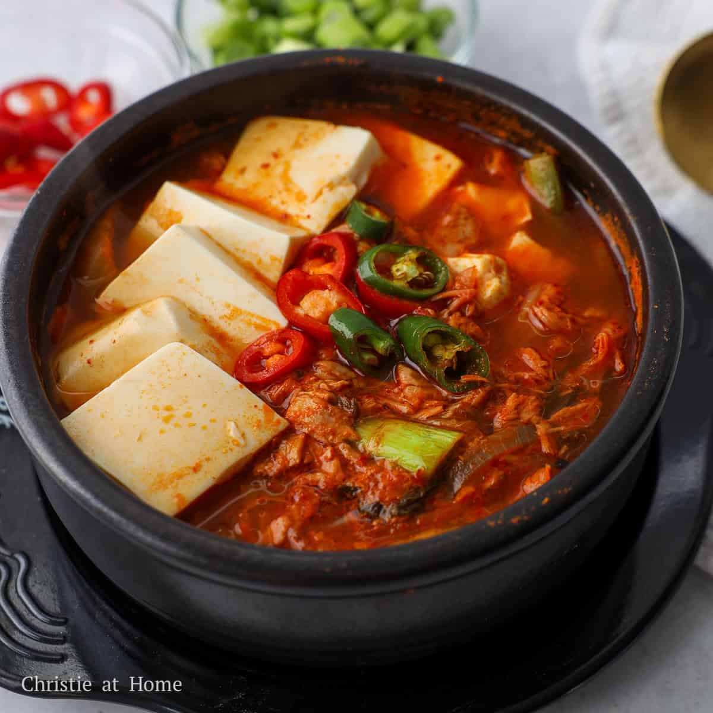

Kimchi Stew

Kimchi-jjigae or kimchi stew is a jjigae, or stew-like Korean dish, made
with kimchi and other ingredients, such as pork, scallions, onions, and
diced tofu. It is one of the most common stews in Korean cuisine.
Ingredients
- well-fermented, sour kimchi and its juice
- pork belly
- tofu
- green onions
- onions
- gochujang
Steps
-
Cut well-fermented (sour) kimchi and fatty pork (pork belly or shoulder)
into bite-sized pieces.
-
Heat sesame oil in a pot over medium heat. Sauté the pork until browned,
then add the kimchi and cook until softened, which intensifies the
flavor.
-
Add kimchi juice, water or anchovy-kelp stock. Add seasonings: 1-2 tbsp
hot pepper flakes (gochugaru), minced garlic, 1 tsp sugar (to balance
sourness), and sometimes 1 tbsp gochujang (red chili paste).
-
Cover and simmer on low heat for at least 15-20 minutes to allow the
flavors to merge.
-
Add sliced tofu and green onions. Cook for another 5 minutes until the
tofu is hot.
- Now you can serve it with a plain rice deliciously.
Home